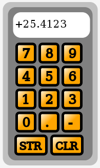
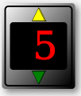
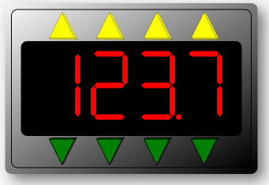

MBLogic
for an open world in automation
MBLogic
for an open world in automation
Help - HMI Numeric Input
Overview:
The numeric data entry devices provide a means of changing values or set-points at the server. They operate by allowing the operator to create or alter numbers which are then written to server tag addresses.
Numeric Input Pad:

The numeric input pad allows numbers to be entered in a format similar to that used by a calculator. It has the digits 0 to 9, decimal point, sign, and store and clear keys.
The operator enters a number by selecting the numeric digits (0 to 9). Each digit is appended to the previous one. If the operator selects the decimal point key, a decimal point is appended and all subsequent digits are appended to the right of the decimal. The sign key will reverse the sign of the number.
When the clear ("CLR") key is pressed, the current value is cleared. When the store ("STR") key is pressed, the current value is written to the server.
The value may be retrieved as an integer or floating point, or both. When the value is an integer, the number is truncated.
SVG
The following defines the buttons only. One definition provides the actual button, which is then used by the following buttons which add the relevant text.
<defs> <g id="MB_NumericButton"> <rect x="-18" y="-18" width="36" height="36" rx="5"/> </g> <g id="MB_NumericButton0"> <use xlink:href="#MB_NumericButton"/> <text x="-7" y="9" font-size="24" stroke-width="2px">0</text> </g> <g id="MB_NumericButton1"> <use xlink:href="#MB_NumericButton"/> <text x="-7" y="9" font-size="24" stroke-width="2px">1</text> </g> <g id="MB_NumericButton2"> <use xlink:href="#MB_NumericButton"/> <text x="-7" y="9" font-size="24" stroke-width="2px">2</text> </g> <g id="MB_NumericButton3"> <use xlink:href="#MB_NumericButton"/> <text x="-7" y="9" font-size="24" stroke-width="2px">3</text> </g> <g id="MB_NumericButton4"> <use xlink:href="#MB_NumericButton"/> <text x="-7" y="9" font-size="24" stroke-width="2px">4</text> </g> <g id="MB_NumericButton5"> <use xlink:href="#MB_NumericButton"/> <text x="-7" y="9" font-size="24" stroke-width="2px">5</text> </g> <g id="MB_NumericButton6"> <use xlink:href="#MB_NumericButton"/> <text x="-7" y="9" font-size="24" stroke-width="2px">6</text> </g> <g id="MB_NumericButton7"> <use xlink:href="#MB_NumericButton"/> <text x="-7" y="9" font-size="24" stroke-width="2px">7</text> </g> <g id="MB_NumericButton8"> <use xlink:href="#MB_NumericButton"/> <text x="-7" y="9" font-size="24" stroke-width="2px">8</text> </g> <g id="MB_NumericButton9"> <use xlink:href="#MB_NumericButton"/> <text x="-7" y="9" font-size="24" stroke-width="2px">9</text> </g> <g id="MB_NumericButtonPoint"> <use xlink:href="#MB_NumericButton"/> <text x="-7" y="9" font-size="24" stroke-width="2px">.</text> </g> <g id="MB_NumericButtonSign"> <use xlink:href="#MB_NumericButton"/> <text x="-7" y="9" font-size="24" stroke-width="2px">-</text> </g> <g id="MB_NumericButtonClear"> <rect x="-30" y="-18" width="60" height="36" rx="5"/> <text x="-22" y="9" font-size="20" stroke-width="2px">CLR</text> </g> <g id="MB_NumericButtonStore"> <rect x="-30" y="-18" width="60" height="36" rx="5"/> <text x="-22" y="9" font-size="20" stroke-width="2px">STR</text> </g> </defs>
The actual numeric pad must be created for each instance in which it is used. This is necessary because a Javascript function must be attached separately to each button.
<!-- Numeric data entry. -->
<g transform="translate(650, 100)">
<!-- Outline. -->
<rect x="0" y="0" width="185" height="320" rx="15" fill="silver"/>
<rect x="10" y="10" width="165" height="300" rx="15" fill="grey"/>
<!-- Numeric display -->
<rect x="20" y="20" width="150" height="50" rx="15" fill="white"/>
<text id="numberpaddisplay" x="22" y="50" font-size="20"
stroke-width="2px">????????????</text>
<!-- buttons. -->
<g transform="translate(45, 100)" >
<g transform="translate(0, 0)" class="buttonactivate"
fill="url(#MB_OrangeGradient)"
onclick="NumberPad.AppendDigit(7);">
<use xlink:href="#MB_NumericButton7"/>
</g>
<g transform="translate(45, 0)" class="buttonactivate"
fill="url(#MB_OrangeGradient)"
onclick="NumberPad.AppendDigit(8);">
<use xlink:href="#MB_NumericButton8"/>
</g>
<g transform="translate(90, 0)" class="buttonactivate"
fill="url(#MB_OrangeGradient)"
onclick="NumberPad.AppendDigit(9);">
<use xlink:href="#MB_NumericButton9"/>
</g>
<g transform="translate(0, 45)" class="buttonactivate"
fill="url(#MB_OrangeGradient)"
onclick="NumberPad.AppendDigit(4);">
<use xlink:href="#MB_NumericButton4"/>
</g>
<g transform="translate(45, 45)" class="buttonactivate"
fill="url(#MB_OrangeGradient)"
onclick="NumberPad.AppendDigit(5);">
<use xlink:href="#MB_NumericButton5"/>
</g>
<g transform="translate(90, 45)" class="buttonactivate"
fill="url(#MB_OrangeGradient)"
onclick="NumberPad.AppendDigit(6);">
<use xlink:href="#MB_NumericButton6"/>
</g>
<g transform="translate(0, 90)" class="buttonactivate"
fill="url(#MB_OrangeGradient)"
onclick="NumberPad.AppendDigit(1);">
<use xlink:href="#MB_NumericButton1"/>
</g>
<g transform="translate(45, 90)" class="buttonactivate"
fill="url(#MB_OrangeGradient)"
onclick="NumberPad.AppendDigit(2);">
<use xlink:href="#MB_NumericButton2"/>
</g>
<g transform="translate(90, 90)" class="buttonactivate"
fill="url(#MB_OrangeGradient)"
onclick="NumberPad.AppendDigit(3);">
<use xlink:href="#MB_NumericButton3"/>
</g>
<g transform="translate(0, 135)" class="buttonactivate"
fill="url(#MB_OrangeGradient)"
onclick="NumberPad.AppendDigit(0);">
<use xlink:href="#MB_NumericButton0"/>
</g>
<g transform="translate(45, 135)" class="buttonactivate"
fill="url(#MB_OrangeGradient)"
onclick="NumberPad.AppendDigit('.');">
<use xlink:href="#MB_NumericButtonPoint"/>
</g>
<g transform="translate(90, 135)" class="buttonactivate"
fill="url(#MB_OrangeGradient)"
onclick="NumberPad.AppendDigit('-');">
<use xlink:href="#MB_NumericButtonSign"/>
</g>
<g transform="translate(10, 180)" class="buttonactivate"
fill="url(#MB_OrangeGradient)"
onclick="MBHMIProtocol.WriteImmediate('Testholdingreg32',
NumberPad.GetValueInt());
MBHMIProtocol.WriteImmediate('Testholdingregfloat',
NumberPad.GetValueFloat());
MBHMIProtocol.WriteImmediate('Testholdingregdouble',
NumberPad.GetValueFloat());">
<use xlink:href="#MB_NumericButtonStore"/>
</g>
<g transform="translate(80, 180)" class="buttonactivate"
fill="url(#MB_OrangeGradient)"
onclick="NumberPad.ClearDisplay();">
<use xlink:href="#MB_NumericButtonClear"/>
</g>
</g>
</g>
Javascript:
// Numeric display. This does not get added to the display list. var NumberPad = new MB_NumericPad(document, "numberpaddisplay", 12);
Javascript Library Functions:
The following Javascript library functions are useful for this feature:
- MB_NumericPad
- MBHMIProtocol.WriteImmediate
- MBHMIProtocol.AddWrite
How it works:
The numeric data entry pad works by creating an array of buttons and attaching an "onclick" event to each one. This is similar to how a push button works. In this case though, the "onclick" event calls one of the methods belonging to the numeric pad object to append a digit or perform some other action.
Before a numeric pad can be used, a new MB_NumericPad object must be created (see the example Javascript above). This is initialised with a reference to the text area used to display the intermediate value, and with an integer which is used to limit the number of digits which can be entered. Multiple numeric pads can be used in the same program by simply creating multiple objects.
Each numeric button has an event attached to it which calls the number pad object to append the appropriate digit. For example, the "7" button has the onclick="NumberPad.AppendDigit(7);" attached to it. The parameter (7 in this case) determines which digit is appended. The same is true for decimal point (".") and sign ("-"). There is additional logic inside MB_NumericPad which only allows the decimal point to be entered once, and to toggle the sign between "-" and "+" (the default is positive).
The clear ("CLR") button as a different event attached to it. onclick="NumberPad.ClearDisplay();" causes MB_NumericPad to clear the intermediate value and set the numeric pad back to the default state.
The store ("STR") button operates in a manner similar to a conventional push button. The "onclick" event calls WriteImmediate (or AddWrite). However, instead of writing a constant, it calls the GetValueInt (for an integer result) or GetValueFloat (for a floating point result) to retrieve the current value. In the example below, both GetValueInt and GetValueFloat are called and the result is written to 3 different tags. Storing the result does not clear the intermediate value, and the same value can be stored repeatedly.
onclick="MBHMIProtocol.WriteImmediate('Testholdingreg32', NumberPad.GetValueInt());
MBHMIProtocol.WriteImmediate('Testholdingregfloat', NumberPad.GetValueFloat());
MBHMIProtocol.WriteImmediate('Testholdingregdouble', NumberPad.GetValueFloat());"
Numeric Increment Input:
 
The numeric increment input allows a numeric value to be incremented or decremented by clicking on "up" and "down" buttons. This can be used to adjust set points and other values incrementally.
Display of Numbers
A numeric increment input simply combines a normal numeric display with a set of push buttons for incrementing the value. For information on displaying numeric values, see the help section on "Numeric and Text Display".
Backgrounds and Bezels:
Numbers and text strings are displayed using the basic SVG "text" element. However decorative graphics can be used backgrounds which the text element writes on top of. These background graphics can be as elaborate or as simple as desired. SVG transforms can be used to scale the graphics to change the size and proportions as required for the application.
The bezels provided here for numeric inputs are slightly different from those used for normal numeric displays because they provide space for the push buttons which are used to increment and decrement the digits. In addition, a set of special push button graphics are provided which fit the available space better than the standard push buttons.
"MB_IncDecBezel" is sized for displaying 4 numeric digits. "MB_IncDecBezel0_5" is half the width of "MB_IncDecBezel" and is suitable for 2 digits, or 1 digit with sign.
"MB_TriButtonUp" provides a push button graphic with the point facing up. "MB_TriButtonDown" provides a push button graphic with the point facing down.
<defs> <!-- This is a decorative gradient for the display. --> <linearGradient id="MB_DigitBezelGradient" x1="1" y1="1" x2="0" y2="0"> <stop offset="0%" stop-color="black" /> <stop offset="100%" stop-color="whitesmoke" /> </linearGradient> <!-- This is a decorative box for the increment/decrement display. --> <g id="MB_IncDecBezel"> <!-- This provides the drop shadow. --> <rect x="-38" y="-25" width="80" height="54" rx="2" fill="grey" filter="url(#MB_DropShadowFilter)" stroke="none"/> <!-- This provides the outer ring. --> <rect x="-40" y="-27" width="80" height="54" rx="2" fill="url(#MB_DigitBezelGradient)" stroke="none"/> <!-- This provides the middle ring. --> <rect x="-38" y="-25" width="76" height="50" rx="2" fill="url(#MB_DigitBezelGradient)" stroke="black"/> <!-- This provides the inner background. --> <rect x="-35" y="-15" width="70" height="30" rx="2" /> </g> <!-- This is a decorative box for the increment/decrement display. This is half the width of MB_IncDecBezel --> <g id="MB_IncDecBezel0_5"> <!-- This provides the drop shadow. --> <rect x="-21" y="-25" width="46" height="54" rx="2" fill="grey" filter="url(#MB_DropShadowFilter)" stroke="none"/> <!-- This provides the outer ring. --> <rect x="-23" y="-27" width="46" height="54" rx="2" fill="url(#MB_DigitBezelGradient)" stroke="none"/> <!-- This provides the middle ring. --> <rect x="-21" y="-25" width="42" height="50" rx="2" fill="url(#MB_DigitBezelGradient)" stroke="black"/> <!-- This provides the inner background. --> <rect x="-18" y="-15" width="36" height="30" rx="2" /> </g> <!-- This provides a triangular button pointing up. --> <g id="MB_TriButtonUp"> <!-- This provides the relief. --> <polygon points="-20,20 -16,22 24,22 20,20 -20,20" /> <polygon points="0,-20 4,-18 24,22 20,20 0,-20" /> <!-- This is the button. --> <polygon points="-20,20 0,-20 20,20 -20,20"/> </g> <!-- This provides a triangular button pointing down. --> <g id="MB_TriButtonDown"> <!-- This provides the relief. --> <polygon points="-20,-20 -15,-22 23,-22 20,-20 -20,-20"/> <polygon points="23,-22 20,-20 0,20 2,19 23,-22"/> <!-- This is the button. --> <polygon points="-20,-20 0,20 20,-20 -20,-20"/> </g> </defs>
SVG
The following shows a numeric increment/decrement widget for a single digit. Multiple digits can be used by simply adding more push buttons.
<!-- This control increments and decrements a count. -->
<g transform="translate(75, 300)" >
<g transform="scale(2)" fill="black">
<use xlink:href="#MB_IncDecBezel0_5"/>
<!-- This is the increment button. -->
<g class="tributton" transform="translate(0, -20) scale(0.2)"
fill="yellow" stroke="black" stroke-width="1px"
onmousedown="MBHMIProtocol.WriteIncImmediate('PumpSpeedCmd',
'PumpSpeedCmd', 1, 99);">
<use xlink:href="#MB_TriButtonUp"/>
</g>
<!-- This is the decrement button. -->
<g class="tributton" transform="translate(0, 20) scale(0.2)"
fill="green" stroke="black" stroke-width="1px"
onmousedown="MBHMIProtocol.WriteIncImmediate('PumpSpeedCmd',
'PumpSpeedCmd', -1, -25);">
<use xlink:href="#MB_TriButtonDown"/>
</g>
</g>
<!-- This displays the actual pump speed. -->
<text id="PumpIncDisplay" x="24" y="16" font-size="48" text-anchor="end"
stroke="red" fill="red" >Pump Speed</text>
</g>
Javascript
// Pump speed numeric display for the increment buttons. var PumpSpeedIncDisplay = new MB_NumericDisplay(document, "PumpIncDisplay"); MBHMIProtocol.AddToDisplayList(PumpSpeedIncDisplay, "PumpSpeedActual", "read");
Javascript Library Functions:
The following Javascript library functions are useful for this feature:
- MB_NumericDisplay
- MB_NumericFloatDisplay
- MB_TextDisplay
- MBHMIProtocol.WriteIncImmediate
How it works:
The numeric increment input is simply a combination of two conventional incrementing push buttons and a numeric display. See the documentation on push buttons and numeric displays for more information on how they work.
The amount and limit of increment can be set in the push button parameters. The format for the numeric output can be changed by using a different numeric display object (MB_NumericDisplay was used here).
For example:
<!-- This increments the value by 1000. -->
onclick="MBHMIProtocol.WriteIncImmediate('LED7Segment', 'LED7Segment', 1000, 9999);"
<!-- This increments the value by 100. -->
onclick="MBHMIProtocol.WriteIncImmediate('LED7Segment', 'LED7Segment', 100, 9999);"
<!-- This increments the value by 10. -->
onclick="MBHMIProtocol.WriteIncImmediate('LED7Segment', 'LED7Segment', 10, 9999);"
<!-- This increments the value by 1. -->
onclick="MBHMIProtocol.WriteIncImmediate('LED7Segment', 'LED7Segment', 1, 9999);"
<!-- This decrements the value by 1000. -->
onclick="MBHMIProtocol.WriteIncImmediate('LED7Segment', 'LED7Segment', -1000, 9999);"
<!-- This decrements the value by 100. -->
onclick="MBHMIProtocol.WriteIncImmediate('LED7Segment', 'LED7Segment', -100, 9999);"
<!-- This decrements the value by 10. -->
onclick="MBHMIProtocol.WriteIncImmediate('LED7Segment', 'LED7Segment', -10, 9999);"
<!-- This decrements the value by 1. -->
onclick="MBHMIProtocol.WriteIncImmediate('LED7Segment', 'LED7Segment', -1, 9999);"
Numeric Increment Input for 7 Segment LED Digits
Numeric increment/decrement displays can also be combined with 7 segment LED displays. The details of displaying 7 Segment LED Digits are described in the section on "Numeric and Text Display" and is not repeated here.
SVG
This shows a complete example for a 4 digit display.
<!-- This is an LED display plus numeric entry. -->
<g transform="translate(200, 425)">
<!-- This is used to scale the size of the entire LED display. -->
<g transform="scale(4)">
<!-- This is a decorative box for the display. -->
<g transform="translate(0, 0)" stroke="black" stroke-width="0.25px">
<use xlink:href="#MB_IncDecBezel"/>
</g>
<!-- Set the appearance of the numbers. -->
<g transform="translate(-28, -12)" fill="red"
stroke="black" stroke-width="0.25px">
<!-- Digit 4 - Left most. -->
<g transform="translate(0, 0)">
<use id="LEDB40" xlink:href="#MB_LED7SEG0"/>
<use id="LEDB41" xlink:href="#MB_LED7SEG1"/>
<use id="LEDB42" xlink:href="#MB_LED7SEG2"/>
<use id="LEDB43" xlink:href="#MB_LED7SEG3"/>
<use id="LEDB44" xlink:href="#MB_LED7SEG4"/>
<use id="LEDB45" xlink:href="#MB_LED7SEG5"/>
<use id="LEDB46" xlink:href="#MB_LED7SEG6"/>
<use id="LEDB47" xlink:href="#MB_LED7SEG7"/>
<use id="LEDB48" xlink:href="#MB_LED7SEG8"/>
<use id="LEDB49" xlink:href="#MB_LED7SEG9"/>
<!-- Decimal point. -->
<!-- <circle cx="13px" cy="21px" r="1px" fill="red" /> -->
</g>
<!-- Digit 3. -->
<g transform="translate(15, 0)">
<use id="LEDB30" xlink:href="#MB_LED7SEG0"/>
<use id="LEDB31" xlink:href="#MB_LED7SEG1"/>
<use id="LEDB32" xlink:href="#MB_LED7SEG2"/>
<use id="LEDB33" xlink:href="#MB_LED7SEG3"/>
<use id="LEDB34" xlink:href="#MB_LED7SEG4"/>
<use id="LEDB35" xlink:href="#MB_LED7SEG5"/>
<use id="LEDB36" xlink:href="#MB_LED7SEG6"/>
<use id="LEDB37" xlink:href="#MB_LED7SEG7"/>
<use id="LEDB38" xlink:href="#MB_LED7SEG8"/>
<use id="LEDB39" xlink:href="#MB_LED7SEG9"/>
<!-- Decimal point. -->
<!-- <circle cx="13px" cy="21px" r="1px" fill="red" /> -->
</g>
<!-- Digit 2. -->
<g transform="translate(30, 0)">
<use id="LEDB20" xlink:href="#MB_LED7SEG0"/>
<use id="LEDB21" xlink:href="#MB_LED7SEG1"/>
<use id="LEDB22" xlink:href="#MB_LED7SEG2"/>
<use id="LEDB23" xlink:href="#MB_LED7SEG3"/>
<use id="LEDB24" xlink:href="#MB_LED7SEG4"/>
<use id="LEDB25" xlink:href="#MB_LED7SEG5"/>
<use id="LEDB26" xlink:href="#MB_LED7SEG6"/>
<use id="LEDB27" xlink:href="#MB_LED7SEG7"/>
<use id="LEDB28" xlink:href="#MB_LED7SEG8"/>
<use id="LEDB29" xlink:href="#MB_LED7SEG9"/>
<!-- Decimal point. -->
<circle cx="13px" cy="21px" r="1px" fill="red" />
</g>
<!-- Digit 1 - right most. -->
<g transform="translate(45, 0)">
<use id="LEDB10" xlink:href="#MB_LED7SEG0"/>
<use id="LEDB11" xlink:href="#MB_LED7SEG1"/>
<use id="LEDB12" xlink:href="#MB_LED7SEG2"/>
<use id="LEDB13" xlink:href="#MB_LED7SEG3"/>
<use id="LEDB14" xlink:href="#MB_LED7SEG4"/>
<use id="LEDB15" xlink:href="#MB_LED7SEG5"/>
<use id="LEDB16" xlink:href="#MB_LED7SEG6"/>
<use id="LEDB17" xlink:href="#MB_LED7SEG7"/>
<use id="LEDB18" xlink:href="#MB_LED7SEG8"/>
<use id="LEDB19" xlink:href="#MB_LED7SEG9"/>
<!-- Decimal point. -->
<!-- <circle cx="13px" cy="21px" r="1px" fill="red" /> -->
</g>
</g>
<!-- These are the increment buttons. -->
<g transform="translate(-22, -20)" fill="yellow" stroke="black"
stroke-width="0.25px">
<g class="tributton" transform="translate(0, 0) scale(0.2)"
onclick="MBHMIProtocol.WriteIncImmediate('LED7Segment', 'LED7Segment',
1000, 9999);">
<use xlink:href="#MB_TriButtonUp"/>
</g>
<g class="tributton" transform="translate(15, 0) scale(0.2)"
onclick="MBHMIProtocol.WriteIncImmediate('LED7Segment', 'LED7Segment',
100, 9999);">
<use xlink:href="#MB_TriButtonUp"/>
</g>
<g class="tributton" transform="translate(30, 0) scale(0.2)"
onclick="MBHMIProtocol.WriteIncImmediate('LED7Segment', 'LED7Segment',
10, 9999);">
<use xlink:href="#MB_TriButtonUp"/>
</g>
<g class="tributton" transform="translate(45, 0) scale(0.2)"
onclick="MBHMIProtocol.WriteIncImmediate('LED7Segment', 'LED7Segment',
1, 9999);">
<use xlink:href="#MB_TriButtonUp"/>
</g>
</g>
<!-- These are the decrement buttons. -->
<g transform="translate(-22, 20)" fill="green" stroke="black"
stroke-width="1px" >
<g class="tributton" transform="translate(0, 0) scale(0.2)"
onclick="MBHMIProtocol.WriteIncImmediate('LED7Segment', 'LED7Segment',
-1000, 9999);">
<use xlink:href="#MB_TriButtonDown"/>
</g>
<g class="tributton" transform="translate(15, 0) scale(0.2)"
onclick="MBHMIProtocol.WriteIncImmediate('LED7Segment', 'LED7Segment',
-100, 9999);">
<use xlink:href="#MB_TriButtonDown"/>
</g>
<g class="tributton" transform="translate(30, 0) scale(0.2)"
onclick="MBHMIProtocol.WriteIncImmediate('LED7Segment', 'LED7Segment',
-10, 9999);">
<use xlink:href="#MB_TriButtonDown"/>
</g>
<g class="tributton" transform="translate(45, 0) scale(0.2)"
onclick="MBHMIProtocol.WriteIncImmediate('LED7Segment', 'LED7Segment',
-1, 9999);">
<use xlink:href="#MB_TriButtonDown"/>
</g>
</g>
</g> <!-- Scale. -->
</g>